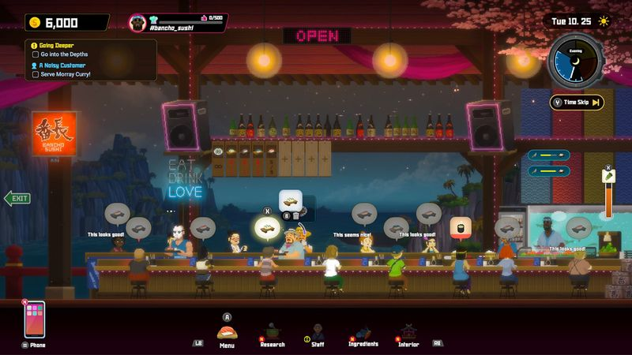
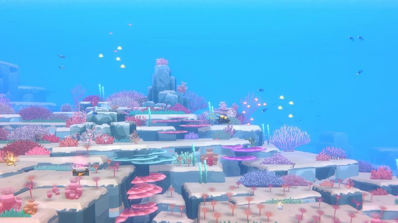

The thirty-second version
Cozy in the mornings, unhinged by midnight.
Finally, a job simulator where the boss is a giant squid and it's fine.
Dave the Diver is at least four games in a trenchcoat and every single one of them is charming. You spearfish in the mornings, run a restaurant at night, and every few in-game days a boss fight or a farm sub-plot shows up and you laugh, again. It's the coziest game any of us has bounced through in years.
Okay, what is this thing?
You are a man called Dave, you have a wetsuit and a personality, and your best friend Bancho runs the sushi bar you supply. Then a whale asks you to help. Then you are farming rice. Then it's a rhythm mini-game about food prep. We kept expecting it to run out of ideas, and it kept refusing to.
The real trick is how the two halves feed each other. Better weapons let you catch better fish which unlock better menu items which fund better weapons, and you're always one dive away from paying off the new dining chairs. It looks like a phone game and plays like something a lot bigger. The pixel art holds up when things get weird, and things get very weird.


Why it escaped the group chat
- You dive by day and run the sushi restaurant by night, and both loops are full games.
- The Blue Hole changes layout each morning, so no two supply runs go the same way.
- There is a farm. There is not a good reason for the farm. It rules.
Three dads enter
01
Dad Who Skipped the Tutorial
The one where I beat a boss and then made everyone dinner.
Cozy games are my lane and I never want to leave it. I got fully hooked on the restaurant side, obsessed over the menu, and refused to sleep until I'd unlocked the wasabi. When the other two asked how the story was going I said 'there's a story?' and then took a screenshot of a plate of sea urchin. That's the review.
02
The Descent Guy
Optimising a nine-seat evening rush. Absolutely my lane.
I was suspicious for about forty minutes and then I did the maths on the harpoon upgrades. Now I have opinions about which harpoon carries which fish, and I can price a nine-seat evening rush better than anyone else here. I'd like to lodge one complaint: the boss fights, while good, don't quite justify the ammo I keep burning. I'm fine. I'm fine.
03
Normal-ish Dad
The one I play after the kids are asleep and life has been long.
Sessions are self-contained. A dive, a service, off to bed. It's the game that fills the spot Stardew used to and it's a nicer looking one. If you're starting it, know that the mid-game pace slows a bit when the story goes big, but by then you're too fond of Bancho to leave. It's a really easy one for me to recommend.
Who it is for and what to watch
Invite these people
- Anyone who wants a cozy game that still has a plot
- Restaurant simulator fans who also enjoy stabbing eels
- People who miss the point of the tutorial and are having a great time anyway
Dad caveats
- The mid-game story pushes hard and the pacing wobbles for a few hours
- Boss fights can spike in difficulty in a very not-cozy way
- You will crave sushi. That's not a bug.
Receipts
Two of us saw the credits on PC, one of us hit around ten hours across a fortnight. Facts checked against the game's official Steam listing.